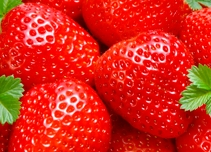
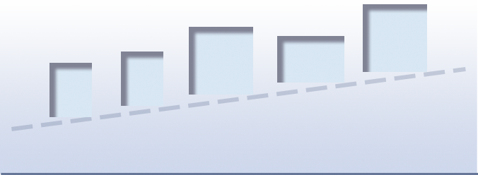

Фотография в интерьере
Идея украшать интерьер фотографиями не нова.
Однако если раньше на стены вешали портреты домочадцев, то
сегодня все чаще для этой цели используют запечатленные на
пленку/SD-карту пейзажи, натюрморты и т. д. Как сделать помещение
уютнее, гармоничнее и привлекательнее с помощью нескольких
фотоснимков? Узнаете прямо сейчас!
Несмотря на то, что
на Западе фотографии уже довольно долго используют в качестве
элементов декора помещений, в России это явление
появилось недавно.
Выбор идеи фото
Сюжет стоит выбирать исходя из назначения комнаты, где планируется расположить фотографии.
-
для спальни предпочтительно использовать нейтральные кадры
-

для кухни отлично подойдут яркие фотографии
one more line -
динамичные снимки будут уместны в гостиной
one more line
Универсальным же вариантом, который
добавит уюта в любую комнату,
считается фото с
запечатленными членами семьи.
Если планируется повесить несколько снимков, они должны
не только
гармонично смотреться вместе, но и быть
объединены одной идеей.
Цвет или ч/б
После того как определились с сюжетом, возникает
очередной вопрос: «Что лучше – цветная или монохромная
фотография?». Здесь, конечно, нужно отталкиваться
от оформления помещения и руководствоваться
собственным вкусом. Однако стоит сказать, что классикой,
которая всегда в
моде, являются черно-белые снимки.
Основное правило – группировать в одном помещении допускается либо только цветные, либо черно-белые. При этом не рекомендуется смешивать холодные и теплые оттенки.
Подходящее обрамление
Фотографии на стену вешать можно как в рамах, так и без них. Единственное – мы советуем соблюдать единство, т. е. если одно фото в раме, то рядом не стоит располагать снимки без окантовки. Выбор материала для багета зависит от ваших финансовых возможностей и стиля интерьера в целом. Сегодня доступны рамки из пластика, дерева (универсальный вариант), металла и гипса. Если хочется акцентировать внимание на снимке небольшого размера, то лучше оформить его в паспарту.
Багет должен подходить к изображению, а не обоям или прочим аксессуарам.
Как расположить
Фотографиями украшают стены в гостиной и прихожей, нередко несколько рамочек со снимками можно увидеть на стеклянном журнальном столе. Чтобы коллаж смотрелся органично, нужно соблюдать несколько правил:
-
Центральную фотографию из группы, которая, как правило,
самая большая, размещайте на высоте 1,5 метра от пола -
Несколько фотографий заключайте в визуальный
прямоугольник или квадрат -
При создании горизонтального коллажа из нескольких фото
выравнивайте композицию по верхнему или нижнему краю -
При диагональном расположении фотографий диагональ

должна быть восходящей.
Оригинальные идеи
Благодаря современным технологиям, нанести изображение можно практически на любую поверхность. Включите воображение, и тогда фотография станет необычным украшением любого интерьера. К примеру, в ванной комнате или в рабочей зоне на кухне можно создать панно из плитки с фотографией домочадцев. Такое решение считается отличной альтернативой обычному фото в рамке на столе для гостиной. Нанести изображение реально и на натяжные потолки, шторы.
За вполне адекватную сумму удастся заказать постельное белье или наволочки для подушек с изображением любимого человека. А можно вовсе украсить гостиную светильниками (лайтбоксами) с фотографиями, а в прихожей фотоснимками декорировать двери шкафов. Здесь все ограничивается лишь фантазией и возможностями владельца квартиры.